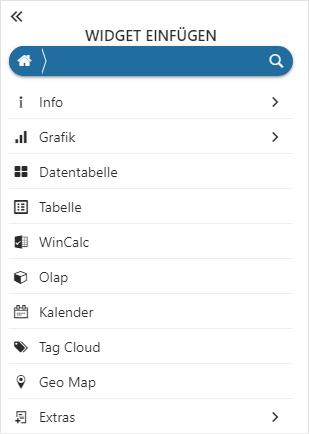

Mit Hilfe des Buttons "neues Widget" (siehe "Power Report-Kopfleiste") oder über das Hauptmenü (Bereich "Widget einfügen") wird die Widget-Auswahl geöffnet.

Durch Anwahl eines Elements wird das Widget in den Power Report übernommen, bzw. zunächst in die darunterliegende Detail-Auswahl gewechselt. Eine detaillierte Beschreibung der zur Verfügung stehen Widgets kann dem Kapitel Power Report - Widgets entnommen werden.
Hinweis
Wurde für die Auswertung bisher noch keine Vorlage definiert, so wird man bei dem Start des Power Reports automatisch in die Widget-Auswahl geführt.